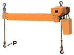
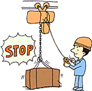
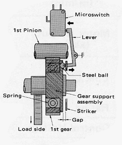
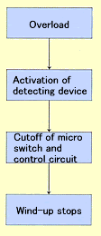

Hitachi Twin Hook Type Chain Hoist

The Hitachi twin hook type chain hoist is a type with two chains that are winded up to the same sprocket by the electric motor.
It is possible to lift up the cargo by keeping it horizontal.
The hoist is suitable to lift up the long cargo or the one which levelness is required.
Specifications
| Model Name | 1/4SHT | 1/2SHT | 1SHT | 1FHT | 2FHT | |
|---|---|---|---|---|---|---|
| Rated Load | 125kg×2 | 250kg×2 | 500kg×2 | 500kg×2 | 1t×2 | |
| Standard Lift (m) | 6 | |||||
| Hoisting Speed (m/min) |
50Hz | 9.2 | 7.1 | 4.6 | 7.1 | 6.8 |
| Hoisting Motor (kW) |
50Hz | 0.4 | 0.65 | 0.8 | 1.3 | 2.4 |
| No. of Poles | 2 | |||||
| Hook Pitch (mm) | 507,719,1005,1209,1500,1980 | 629,816,1000 1244,1500,1970 |
||||
- *
- Only straight I beam can be applicable
- *
- The curtain load must be added to the lower hook (P) side.
Please consult us when you do not use the original hook. - *
- Please consult us when you need other hook pitches.
- *
- Please consult us when the hoist is used more than an hour a day, or the hoist is used for the cargo that is close to the rated load for a long time.
Hitachi Low Headroom Type Chain Hoist
The low headroom type chain hoist minimizes the Z measure; minimum distances from the lower face of the rail to the lower hook, for low ceiling or to lift up the cargo as high as possible.

Specifications and Dimensions
| Model Name | 1/2SL-ET | 1SL-ET | 1FL-ET | 2FL-ET | 2.8FL-ET | |
|---|---|---|---|---|---|---|
| Hoisting Speed (m/min) | 50Hz | 7.1 | 4.6 | 7.1 | 6.8 | 4.1 |
| Traveling Speed (m/min) | 50Hz | 10.5 | ||||
| Electric Source (3-phase) | 3-phase 220/380-415V50Hz | |||||
| Control Voltage (V) | 24 | |||||
| Link Chain | Dia. (mm) | φ7.1 | φ7.1 | φ7.1 | φ10 | φ10 |
| No. of Falls | 1 | 1 | 1 | 1 | 2 | |
| Dimensions (mm) | Z | 440 | 440 | 440 | 552 | 680 |
| A | 846 | 846 | 846 | 1080 | 1160 | |
- *
- Only straight I beam can be applicable
Optional Electric Power for Chain Hoist and Trolley
Products for following electric power are available.
| 50Hz | 240V, 346V, 440V, 500V |
|---|---|
| 60Hz | 230V, 380V, 440V, 460V, 550V |
Optional Control Voltage
Standard control voltage is 24V however, chain hoists for following control voltage are available in case that matching to other equipment is required.
| Control Voltage | 100V 50/60Hz, 200V 50/60Hz |
|---|
With Plated Chain
Corrosion-resistant hi-plated chain. Specs and strengthen of the chain are the same as the ones of standard power chain.
| Hi-plated Chain | Electroless nickel plating (Chemical proof reinforcement, Plate thickness 8μm) |
|---|
With Overload Limiter
Hitachi chain hoists with overload limiter can live up to expectations for increased awareness of safety.

Features
- Overload operation can be prevented.
- Activation load is stable even after duty-cycle operation.
- Equipment life will be increased by the design of shock prevention
- Eelectromechanical structure makes it possible to cope with varieties of electric power.
Principle
Hoisting is cut off by the built-in detector of the reducing gear. This is the Hitachi unique overload limiter. Operation is deactivated and load is kept holding after overload is detected.
Following are the standard products
1/2S(H)2-OL,1SH-OL,2SH-OL,1SNH-OL
Dimensions are the same as ones of the hoist without overload limiter.


Lowering operation is possible after activation of the overload limiter Push the lowering switch first before starting the operation again.
Notes for handling the models with overload limiter
The overload limiter is to prevent unexpected damages when the chain hoist is operated with unintentional overload conditions.
Please refrain from intentional overload operation even if the limiter is not activated.
The activation load is adjusted in the range from 110% to 140% however, it may vary by stiffness of the building and the crane, conditions of carbon steel (Tamahagane), or operation method.
Chain Hoist with UDS Switch
The hoist is with UDS switch which detect the position of the motor. The hoist can be stopped at any place, or signals can be output at any place with UDS. Two points of total eight points are for upper and lower limits. The upper and lower limits of the UDS are set to activate at the 100mm before the incorporated limit switches as the factory default.
Chain hoist is with emergency stop button
The chain hoist can be stopped in emergency cases that are caused by overdrive or erroneous operation.
Dual Speed Trolley
This model is suitable for applications which needs stopping accuracy and operating efficiency
Specifications
| Model Name | 1ETN | 2ETN | 3ETN | 5ETN | |
|---|---|---|---|---|---|
| Rated Load | 1t | 2t | 3t | 5t | |
| Electric Source (3-phase) | 3phase 220/380-415V 50Hz | ||||
| Rating | 20%ED, 120 starts/h | ||||
| Applicable Beam Width (mm) | 75•100•125 | 100•125•150 | 125•150•175 | ||
| Speed ratio 4:1 | |||||
| Traveling speed (m/min) | 50Hz | 21/5.3 | |||
| Motor output (kW) | 50Hz | 0.27/0.07 | 0.6/0,15 | ||
| Pole Number | 2/8 | ||||
| Speed ratio 2:1 | |||||
| Traveling speed (m/min) | 50Hz | 21/10.5 | |||
| Motor output (kW) | 50Hz | 0.27/0.14 | 0.6/0.3 | ||
| Pole Number | 2/4 | ||||
Note
- *
- Please let us know if the saddle used with the trolley is one speed or two speeds as the configuration of the switch varies depending on it.
- *
- The rating shows total number of high speed and low speed.
Large Capacity Type (20t) Chain Hoist
Chain hoists up to 20t will be produced as F series.
Specifications
Model Name
Specifications |
20FH | 20FH-ET |
|---|---|---|
| Rated Load | 20t | |
| Standard Lift (m) | 6 | |
| Hoisting Speed (m/min) | 1.4 | |
| Hoisting Motor (kW) | 2.4(2 units are used) | |
| Traveling Speed (m/min) | — | 14 |
| Traveling Motor (kW) | — | 0.70(2 units are used) |
| Traveling Rail | — | Straight |
| Link Chain (Dia.×Pitch×No. of Falls) | f10×30×8 | |
| Approx. Weight(kg) | 690 | 1,490 |
Lift Change (Extension)
Lift of the chain hoists can be changed on demand.
Tropical Treatment
Motor of this model is varnished twice for high humidity environment.
Isolation Class Change
The standard isolation is E class, but F class is also available.
Special Coating
Any color coating of outer metal parts is also available.
One size larger I-Beam
One size larger I-Beam of ET2 type trolley is available.
With Protection Cover
The chain hoist with a body protection cover of the resin coated cloth.
Direct Connection Upper hook
The chain hoist and the trolley of this model are directly connected by the I-hook.
Special Chain Container
The chain container made of plastic is standard but steel one is also available.
With Thermal Protector
The chain hoist with thermal protector to prevent motor burnout is also available.